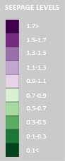

WPS Water level surface
SoS Water Tubes
WPS Seepage on Dam Wall
See Underground
Legends
Gauge
LOADING...

Select a Timeseries Or a water body cell to visualize on chart
Add Selected To Chart
Remove series
Add series
Select TimeSeries